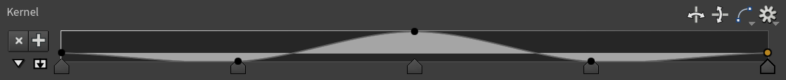

Method 1: Lerp
The easiest way to smooth stuff is with lerp, which I wrote about here. It's really popular for games, especially in Unity. It's not a good method, but it's a nice intro to the topic.
The idea is you start at some value, then pick a target value. Each frame you move a little bit closer to the target by some percentage. The slower you move, the smoother your path becomes.
current = lerp(current, target, factor);Here's a demo with the smooth version in white. Click and drag to draw your own data.
There's 3 big problems with this method, which all smoothing methods suffer from.
Problem 1: Phase shift
If you set the slider really low, it looks like the graph moves to the right. This is called phase shift.
It happens since the value is too lazy in moving to the target, so it sticks near the previous value and smears out the graph.
Phase shift is a popular topic in music, you'll find many audio engineers rambling about it online (Dan Worrall is my favourite). When you use an equalizer on music (for example to boost the bass), it usually adds a bit of phase shift. Some plugins (like Plugindoctor) even show you the exact phase shift you'll get. This is called the phase response.
Phase shift is a natural part of the universe so there's nothing wrong with it, but it's annoying if you want stuff to line up. The lazy way is shifting over the graph. The proper way is using linear phase filters. Linear phase filters always need values forwards in time as well as backwards.
Apparently if you smooth forwards then again in reverse, it cancels out the phase shift and makes a linear phase filter. Here's a demo with the linear version in green.
Problem 2: Oversmoothing
You'll find this method is hard to control. It tends to smooth everything too much or not enough.
This is because of the order of the filter. The order basically means how sharp and precise a filter is. Here's a nice diagram from Electronics Tutorials. You can see as the order increases the curve gets steeper, meaning it cuts precisely and doesn't smudge everything.

The lerp method is a first order IIR lowpass, so it's pretty blunt and tends to smudge everything out.
Turns out there's a cool trick to improve it. If you stack a bunch of low order filters, you approximate a high order filter. This works surprisingly well, though it's much slower and smudgier than doing it properly.
Here's a demo with the original filter in red, and the layered filters coloured towards purple. Try drawing some data and watch it move!
Problem 3: Undershooting
When the slider is below 1, it never actually reaches the target.
You can tell from the formula. Lerp takes a percentage of two values and adds them together as described here. For example if the factor is 0.9, it takes 10% of the current value and adds on 90% of the target value. That means you never get 100% of the target.
Here's a demo where the white line targets the red line. Though it may appear to, it always lies below the red line until the factor is 1.
Running this in Houdini
To get this into Houdini, we need a way to access the previous frame. Luckily there's many ways to do this.
Option 1: Solver
I prefer using a Solver since it's the most robust. It runs in sequence so it's guaranteed not to skip any frames, so if you had a huge jolt it continues smoothing out the impact 1000 frames later. Audio plugins also run in sequence, so we can steal their code and be sure the result is the same. This comes in handy later!
First add a Solver node, then a Point Wrangle inside. Plug the the current animation (Input_1) into the second wrangle input.
Now we can write the formula in VEX. In solvers, @P is the current position. The second input we connected @opinput1_P is the latest animation, which is our target position.
v@P = lerp(v@P, v@opinput1_P, chf("factor"));Here's before and after. It smooths out most of the noise, but reduces the range of motion too much.

Although solvers are more robust, to get linear phase we'd have to chain a bunch of solvers in a row. We can avoid this with Trail.
Option 2: Trail
Instead of sampling all past frames, it's faster to sample a handful of past frames and try to guess the future from them. This is called a sliding window technique, which Catherine used for her demo. It's good for production since it can be batch processed and run in parallel. I used it to make a GPU equalizer. However it's inaccurate for lerp-based smoothing, since it ignores jolts if it has no idea they happened.
To try it, add a Trail node and a Point Wrangle. Plug the trail into the second wrangle input.

For dense meshes, it helps to cache the trail for better performance.
Now we need to extract positions from different frames. This is done using point(). It has 3 arguments, but we only care about the last one.
vector pos = point(0, "P", point_number);Given the current point number @ptnum, we need to find the matching point number on the previous frame. Assuming the topology stays the same, you'll find a pattern. Let's say your @ptnum is 0. If the mesh has 5 points, your @ptnum on the previous frame will be 5, 10, 15, 20 and so on. This happens since the Trail node merges batches of 5 points per frame.
Using npoints(0) to get the number of points in the mesh, the general formula is @ptnum + npoints(0) * frame
Using this idea we can lerp through the positions from past to present, just like with the solver. No dictionaries or maps required!
// Make sure this matches your trail node
int trail_length = chi("../trail1/length");
int point_count = npoints(0);
// Start at the last frame's position (the oldest frame)
v@P = point(1, "P", i@ptnum + point_count * (trail_length - 1));
// Lerp from the past to the present, like the solver except manually
for (int frame = 1; frame < trail_length; ++frame) {
// Get the corresponding point position on the next frame
vector target_pos = point(1, "P", i@ptnum + point_count * (trail_length - 1 - frame));
// The magic formula
v@P = lerp(v@P, target_pos, chf("factor"));
}Here's before and after. It looks pretty similar, but jitters more since it keeps forgetting past samples.

Sadly this version suffers from phase shift, just like the solver. The great thing with Trail is it doesn't have to. We can make linear phase filters and stack them too!
Linear phase version
First we need a way to get frames forwards in time as well as backwards. This is as easy as adding a Time Shift node after Trail.
Set the frame offset to $F + (ch("../trail1/length") - 1) / 2. This centers the current frame, so we have the same number of frames forwards and backwards in time.
Next we can reuse the same frame offset idea from before, except this time filtering in both directions.
// Make sure this matches your trail node
int trail_length = chi("../trail1/length");
int point_count = npoints(0);
float factor = chf("factor");
int layers = chi("layers");
// Build an array of all positions on all frames
// For optimization, you could do a forward lerp in here
vector pos[];
resize(pos, trail_length);
for (int frame = 0; frame < trail_length; ++frame) {
pos[frame] = point(1, "P", i@ptnum + point_count * (trail_length - 1 - frame));
}
// Smooth a bunch of times in a row (if you want)
for (int i = 0; i < layers; ++i) {
// Smooth forwards in time
vector current_pos = pos[0];
for (int frame = 1; frame < trail_length; ++frame) {
// The magic formula
pos[frame] = lerp(current_pos, pos[frame], factor);
current_pos = pos[frame];
}
// Smooth backwards in time
current_pos = pos[trail_length - 1];
for (int frame = trail_length - 2; frame >= 0; --frame) {
// The magic formula
pos[frame] = lerp(current_pos, pos[frame], factor);
current_pos = pos[frame];
}
}
// Get the center frame, which is our frame
v@P = pos[trail_length / 2];Thanks to looking into the future, we can anticipate motion before it even happens. Here's a demo with the linear phase version in green and the original version in red.

While lerp works OK, there's plenty of fancier methods of smoothing out stuff. Let's learn about convolution!
Method 2: Convolution
Convolution solves many problems we were having before. It's practically linear phase and only needs a handful of frames, making it perfect for batch processing. It's a weighted sum just like lerp, but it's much more powerful than you'd expect. It works for smoothing, sharpening, embossing and all kinds of cool filters.
It works by picking a value, sampling the neighbours around it, multiplying them and adding them together. It's like what we did with lerp, except now we have precise control over how much each neighbour contributes to the final result. We can totally ignore neighbours or even flip their influence.
For example, say you want each value to be the average of its 2 neighbours. For that you can use the kernel [0.5, 0, 0.5].
Here we sample 9's neighbours (4 and 6), then calculate 4 * 0.5 + 9 * 0 + 6 * 0.5 = 5. In other words, ignore 9 and average 4 and 6 together.
The key idea of convolution is you can slide the kernel up and down. Click and drag to see what I mean!
Tick "Convolve All" to see the full convolution, then mess with the weights to see what you find! Here's a few you can try:
- The kernel
[1, 0, 0]shifts everything 1 unit to the right. - The kernel
[0, 0, 1]shifts everything 1 unit to the left. - The kernel
[0, 1, 0]keeps everything the same. - The kernel
[1, 1, 1]sums all 3 values together. - The kernel
[1, 1, 0]sums the previous and current value. - The kernel
[0, 1, 1]sums the current and next value. - The kernel
[1, 0, 1]sums both neighbours. - The kernel
[0.5, 0, 0.5]averages the two neighbours together. - The kernel
[0.5, 0.5, 0]averages the previous and current value. - The kernel
[0, 0.5, 0.5]averages the current and next value.
With a tiny size 3 kernel, we can already do so many things. Hopefully this gives you an idea of how powerful and versatile convolution is.
Gaussian blur
Gaussian blur is one of the many things we can do with convolution. We just need to replace our kernel with a gaussian kernel. It looks like this.
Stripping the formula to the bones, you can write it as exp(-x * x / (size * size)), where x is the value and size is the width of the shape. It extends infinitely, so you need to pick a size that fits most of it between -1 and 1. I found dividing size by 3 works pretty well, or in other words exp(-9 * x * x / (size * size)). Then we normalize it so all values add to 1.
And just like that we have gaussian blur! Change the kernel size to set the intensity.
Running this in Houdini
To get this into Houdini, we can reuse the trail setup from the lerp section with a few minor changes.
First we need to make the kernel. We can do it in a Detail Wrangle since it never changes and only needs to be built once.
Let's store the kernel in a detail attribute. The syntax is pretty ugly, f[]@kernel just means an array of floats.
// Make sure this matches your trail node
int trail_length = chi("../trail1/length");
// Width of shape, divided by 3 so it fits snugly between -1 and 1
float size = trail_length / 3.0;
// Preallocate array size
resize(f[]@kernel, trail_length);
f@kernel_sum = 0;
// Build guassian kernel (array of floats)
for (int i = 0; i < trail_length; ++i) {
// Center it on the middle value
float x = i - (trail_length - 1) / 2.0;
f[]@kernel[i] = exp(-x * x / (size * size));
f@kernel_sum += f[]@kernel[i];
}Now we dump in the Trail, Time Shift and Point Wrangle from the lerp section. Like before, the frame offset is $F + (ch("../trail1/length") - 1) / 2.
Now onto the convolution. It's surprisingly easy since Trail and Time Shift did the hard work for us. We just need to add up all the values multiplied by their respective weights.
// Make sure this matches your trail node
int trail_length = chi("../trail1/length");
int point_count = npoints(0);
// Convolve all frames to get the current frame
vector pos_total = 0;
for (int frame = 0; frame < trail_length; ++frame) {
vector pos = point(1, "P", i@ptnum + point_count * (trail_length - 1 - frame));
pos_total += pos * f[]@kernel[frame];
}
// Normalize so it adds to 1
v@P = pos_total / f@kernel_sum;The trail length directly controls the amount of blur. The more frames we sample, the more we can blur.
| 23 frames | 61 frames |
|---|---|

|

|
Now I know what you're thinking. This looks exactly like the lerp method from before! What's the point of going through all that effort?
Well firstly, it properly reaches the target unlike the lerp method. And secondly, you can swap out the kernel to get cool effects!
Cool kernels
Here's a cool kernel I made by accident. It turns any animation into an incredible springy mess!
// Make sure this matches your trail node
int trail_length = chi("../trail1/length");
// Preallocate array size
resize(f[]@kernel, trail_length);
f@kernel_sum = 0;
// Build insane kernel
float insanity = 2;
for (int i = 0; i < trail_length; ++i) {
// Center it on the middle value
float x = i - (trail_length - 1) / 2.0;
// Normalize the range
x /= trail_length;
// Invoke madness
f[]@kernel[i] = cos(2 * PI * x) * (insanity - abs(x));
f@kernel_sum += f[]@kernel[i];
}
These formulas are a pain to set up though. It'd be nice if we could control the kernel visually, maybe with a ramp.
Since the ramp stores the kernel for us, we can delete the Detail Wrangle and just use the Point Wrangle.
// Make sure this matches your trail node
int trail_length = chi("../trail1/length");
int point_count = npoints(0);
// Convolve all frames to get the current frame
vector pos_total = 0;
float kernel_sum = 0;
for (int frame = 0; frame < trail_length; ++frame) {
vector pos = point(1, "P", i@ptnum + point_count * (trail_length - 1 - frame));
float weight = chramp("kernel", float(frame) / (trail_length - 1));
pos_total += pos * weight;
kernel_sum += weight;
}
// Normalize so it adds to 1
if (chi("normalize_kernel")) {
pos_total /= kernel_sum;
}
v@P = pos_total;Sharp kernels
Sharpening kernels are usually positive in the middle and negative on the sides. Here's one I drew to exaggerate the motion.
| 15 frames | 35 frames |
|---|---|

|

|
Blurry kernels
We can make blurry kernels too, just like before. To make box blur (also called a moving average), just draw a flat line.
To approximate gaussian blur, draw a bell curve centered at 0.5.
Here's a demo with gaussian blur in blue and box blur in green. Box blur tends to blur more aggressively since it uses all samples equally.

For another type of exaggeration, draw a ramp from negative to positive or vice-versa.
TODO: ADD DEMO AND HIP FILE
Topology convolution
Going off track for a bit, I started wondering what happens if you convolve geometry instead of time.
Convolution just needs neighbours and weights. Let's sample a bunch of nearby points, multiply them by weights and add them together. Just like Attribute Blur, we could do it by connectivity or proximity.
Option 1: Connectivity
If the geometry is connected by edges, we can weigh each point by how many edges away it is from the current point.
For example, TODO: ADD LINE DIAGRAM HERE
This gets biased by the point count and I didn't even scale it by edge lengths, but it's worth a try anyway.
Option 2: Proximity
If we have a disconnected point cloud, we can weigh each point by its distance from the current point.
For example, TODO: ADD DIAGRAM HERE
I thought it'd would work better since edge lengths won't affect it, but it still gets biased by clusters of points with similar distances.
Anyway, back on track. Let's jump to the most advanced filters I know!
Method 3: Biquad filters
Biquad filters are extremely popular for music and sound design. They're used for most digital equalizers, so when you boost the bass or cut the treble, you're likely using a biquad filter.
It gives you full control over the frequency response, so you can make precise changes without affecting other frequencies.
Time Domain
Frequency Domain
TODO: finish this